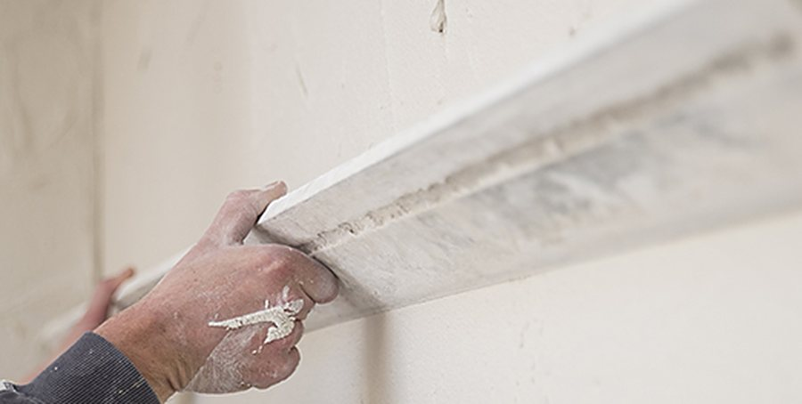
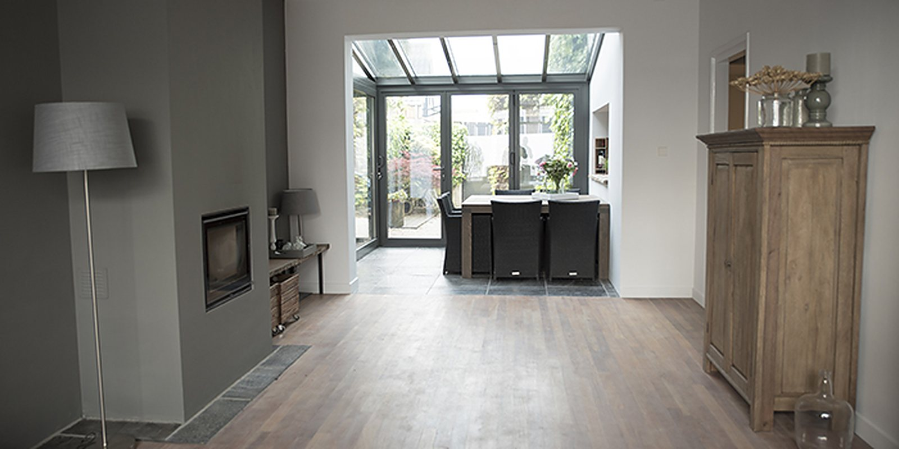
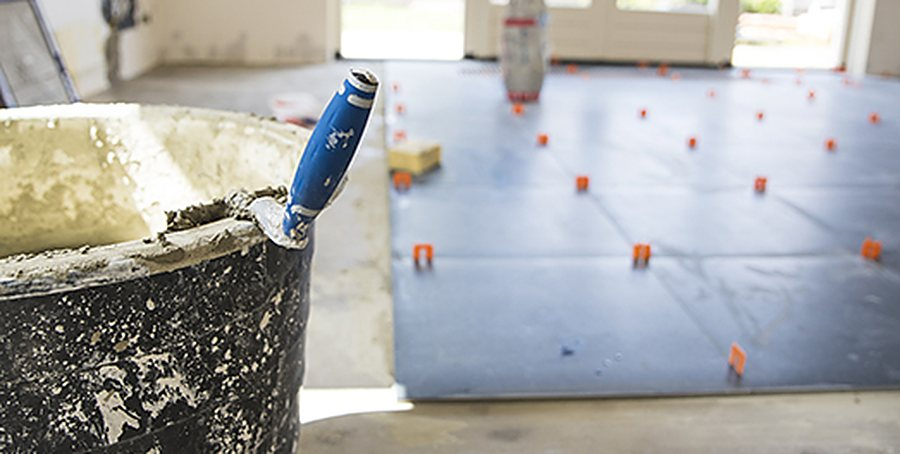
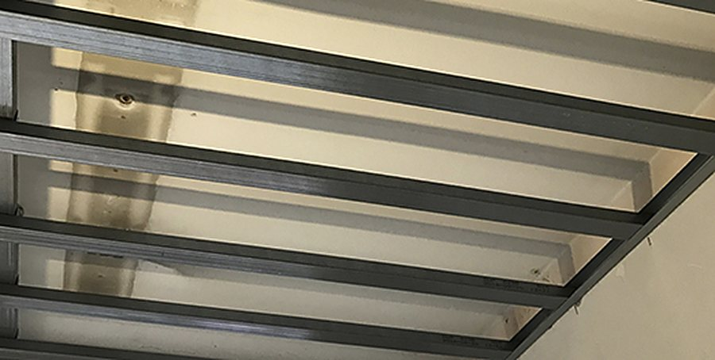
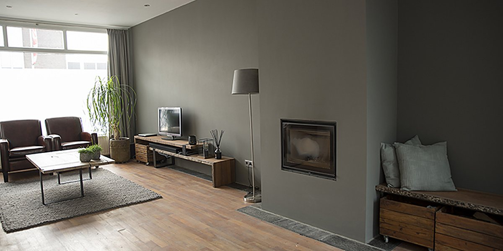

Stucwerk
Wanden en plafonds, van spackspuitwerk en sausklaar stucwerk tot beton ciré.
Meer info
Stucwerk, tegelwerk en afbouw uit Nispen. Voor nieuwbouw en renovatie, van één wand tot een complete benedenverdieping. We plakken alles netjes af en laten het schoon achter.
Alles onder één dak, ook het voorbereidende werk zoals slopen, wanden en plafonds plaatsen en vloerafwerking.

Wanden en plafonds, van spackspuitwerk en sausklaar stucwerk tot beton ciré.
Meer info
Wand en vloer, badkamers en keukens, in design tegels of natuursteen.
Meer info
Plafonds, metalstud wanden, afwerkvloeren en het inkleden van houtkachels.
Meer infoVaak doen we meer dan alleen stucwerk: van doorbraak tot het laatste plafond.
Een doorbraak naar de nieuwe serre en een nieuwe keukenruimte met nieuwe plafonds en leidingwerk. In de keuken een doorkijk naar de serre, daarna is alles opnieuw gestuct.

Een nieuwe houtkachel ingebouwd met een metalstud ombouw, omkleed met brandwerende platen. Een nieuw plafond met inbouwspots, daarna alles opnieuw gestuct en gespoten.
"In tegenstelling tot wat u misschien van stukadoors verwacht, houden wij van een schone werkomgeving."
De Graaf is in 2010 begonnen als stukadoorsbedrijf in Nispen en is in de loop van de jaren uitgegroeid tot een compleet afbouwbedrijf. U kunt bij ons terecht voor nieuwbouw en renovatie, thuis of in uw bedrijfspand.
We besteden veel aandacht aan de voorbereiding: een goede hechtlaag, naden en kieren goed voorbewerkt, en tussendoor controleren of muren en vloeren mooi haaks zijn. Zo is het resultaat niet alleen strak, maar blijft het ook mooi.
Bij een klein en een groter project: eerst alles goed in kaart, dan pas aan de slag.
Vertel kort wat er moet gebeuren. We nemen zo snel mogelijk contact met u op.
Bel Kevin de Graaf gerust voor advies of een afspraak.